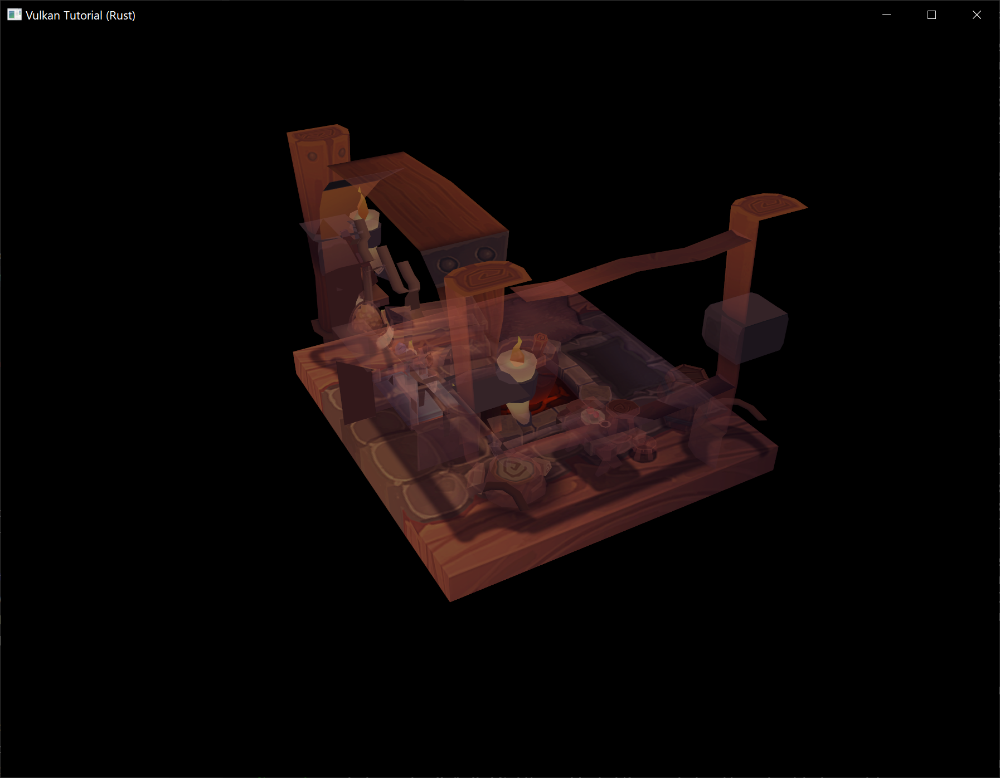

Recycling command buffers
The previous chapters of this tutorial that are not marked by this disclaimer were directly adapted from https://github.com/Overv/VulkanTutorial.
This chapter and the following chapters are instead original creations from someone who is most decidedly not an expert in Vulkan. An authoritative tone has been maintained, but these chapters should be considered a "best effort" by someone still learning Vulkan.
If you have questions, suggestions, or corrections, please open an issue!
Code: main.rs
When you allocate a command buffer and record commands to it, Vulkan allocates blocks of memory to store information about the command buffer and the commands that have been recorded to it. Now that we want to be able to record different commands each frame, we need to recycle this memory in the same way that in C we need to free memory allocated with malloc once it is no longer in use.
Solutions
Vulkan offers three basic approaches for recycling the memory occupied by a command buffer:
- Reset the command buffer (which clears the commands recorded to it) and record new commands to the command buffer
- Free the command buffer (which returns its memory to the command pool it was allocated from) and allocate a new command buffer
- Reset the command pool the command buffer was allocated from (which resets all of the command buffers allocated from the command pool) and record new commands to the command buffer
Let's look at what would be required to implement each of these approaches.
1. Resetting command buffers
By default, command buffers cannot be reset and are effectively immutable once they have been recorded. The ability to reset them is an option that must be enabled on our command pool during its creation and will be applied to any command buffers allocated from this command pool. Add the vk::CommandPoolCreateFlags::RESET_COMMAND_BUFFER flag to the create info structure for the command pool in create_command_pool.
let info = vk::CommandPoolCreateInfo::builder()
.flags(vk::CommandPoolCreateFlags::RESET_COMMAND_BUFFER)
.queue_family_index(indices.graphics);
data.command_pool = device.create_command_pool(&info, None)?;
Next, create a new method for the App struct, update_command_buffer. This method will be called each frame to reset and rerecord the command buffer for the framebuffer that will be used for the current frame.
unsafe fn update_command_buffer(&mut self, image_index: usize) -> Result<()> {
Ok(())
}
Call the new method from the render method right before the uniform buffers for the frame are updated (or after, the order of these two statements is not important).
unsafe fn render(&mut self, window: &Window) -> Result<()> {
// ...
self.update_command_buffer(image_index)?;
self.update_uniform_buffer(image_index)?;
// ...
}
Note that we do need to be careful about when we call update_command_buffer. This method will reset the command buffer which could cause serious issues if the command buffer is still being used to render a previously submitted frame. This issue was also discussed in the Descriptor set layout and buffer chapter which is why the call to App::update_uniform_buffer is where it is. As discussed in more detail in that chapter, both of these calls only happen after the call to wait_for_fences which waits for the GPU to be done with the acquired swapchain image and its associated resources so we are safe to do whatever we want with the command buffer.
In the new method, reset the command buffer with reset_command_buffer.
unsafe fn update_command_buffer(&mut self, image_index: usize) -> Result<()> {
let command_buffer = self.data.command_buffers[image_index];
self.device.reset_command_buffer(
command_buffer,
vk::CommandBufferResetFlags::empty(),
)?;
Ok(())
}
Once reset_command_buffer has returned, the command buffer will be reset to its initial state, no different than a new command buffer freshly allocated from a command pool.
Now we can move the command buffer recording code out of create_command_buffers and into update_command_buffer. The loop over the command buffers is no longer necessary since we are only recording one command buffer per frame. Other than that, only a few mechanical changes are needed to migrate this code to our new method (e.g., replacing references to the loop counter i with image_index).
unsafe fn update_command_buffer(&mut self, image_index: usize) -> Result<()> {
// ...
let model = Mat4::from_axis_angle(
vec3(0.0, 0.0, 1.0),
Deg(0.0)
);
let model_bytes = &*slice_from_raw_parts(
&model as *const Mat4 as *const u8,
size_of::<Mat4>()
);
let info = vk::CommandBufferBeginInfo::builder();
self.device.begin_command_buffer(command_buffer, &info)?;
let render_area = vk::Rect2D::builder()
.offset(vk::Offset2D::default())
.extent(self.data.swapchain_extent);
let color_clear_value = vk::ClearValue {
color: vk::ClearColorValue {
float32: [0.0, 0.0, 0.0, 1.0],
},
};
let depth_clear_value = vk::ClearValue {
depth_stencil: vk::ClearDepthStencilValue { depth: 1.0, stencil: 0 },
};
let clear_values = &[color_clear_value, depth_clear_value];
let info = vk::RenderPassBeginInfo::builder()
.render_pass(self.data.render_pass)
.framebuffer(self.data.framebuffers[image_index])
.render_area(render_area)
.clear_values(clear_values);
self.device.cmd_begin_render_pass(command_buffer, &info, vk::SubpassContents::INLINE);
self.device.cmd_bind_pipeline(command_buffer, vk::PipelineBindPoint::GRAPHICS, self.data.pipeline);
self.device.cmd_bind_vertex_buffers(command_buffer, 0, &[self.data.vertex_buffer], &[0]);
self.device.cmd_bind_index_buffer(command_buffer, self.data.index_buffer, 0, vk::IndexType::UINT32);
self.device.cmd_bind_descriptor_sets(
command_buffer,
vk::PipelineBindPoint::GRAPHICS,
self.data.pipeline_layout,
0,
&[self.data.descriptor_sets[image_index]],
&[],
);
self.device.cmd_push_constants(
command_buffer,
self.data.pipeline_layout,
vk::ShaderStageFlags::VERTEX,
0,
model_bytes,
);
self.device.cmd_push_constants(
command_buffer,
self.data.pipeline_layout,
vk::ShaderStageFlags::FRAGMENT,
64,
&0.25f32.to_ne_bytes()[..],
);
self.device.cmd_draw_indexed(command_buffer, self.data.indices.len() as u32, 1, 0, 0, 0);
self.device.cmd_end_render_pass(command_buffer);
self.device.end_command_buffer(command_buffer)?;
Ok(())
}
With these changes in place, our program can now execute different rendering commands every frame which permits dynamic scenes! Let's exercise this new capability by restoring the rotation of the model to its former glory. Replace the model matrix calculation in App::update_command_buffer with the old calculation that rotates the model over time.
let time = self.start.elapsed().as_secs_f32();
let model = Mat4::from_axis_angle(
vec3(0.0, 0.0, 1.0),
Deg(90.0) * time
);
let model_bytes = &*slice_from_raw_parts(
&model as *const Mat4 as *const u8,
size_of::<Mat4>()
);
Run the program to see that the model should now be back to rotating now that we are pushing an updated model matrix to the shaders every frame.

Lastly, since we are now only submitting our command buffers once before resetting them, we should let Vulkan know this so it can better understand the behavior of our program. This is accomplished by passing the vk::CommandBufferUsageFlags::ONE_TIME_SUBMIT flag when starting to record a command buffer.
let info = vk::CommandBufferBeginInfo::builder()
.flags(vk::CommandBufferUsageFlags::ONE_TIME_SUBMIT);
self.device.begin_command_buffer(command_buffer, &info)?;
You might recall we've used this flag before, there should already be a usage of this flag in the begin_single_time_commands function. This flag isn't required by Vulkan for correctness if you are only using command buffers once before resetting or freeing them, but this knowledge may allow the Vulkan driver to better optimize its handling of our single-use command buffers.
2. Reallocating command buffers
Next we'll take a look at allocating new command buffers each frame.
Replace the code used to reset the command buffer at the beginning of update_command_buffer with code that replaces the previous command buffer with a new command buffer.
unsafe fn update_command_buffer(&mut self, image_index: usize) -> Result<()> {
let allocate_info = vk::CommandBufferAllocateInfo::builder()
.command_pool(self.data.command_pool)
.level(vk::CommandBufferLevel::PRIMARY)
.command_buffer_count(1);
let command_buffer = self.device.allocate_command_buffers(&allocate_info)?[0];
self.data.command_buffers[image_index] = command_buffer;
// ...
}
You could now run the program and see that the program works exactly like it did before, but if you do don't leave it running for too long! You may have already noticed that we aren't freeing the previous command buffer before we allocate a new one. If you observe the memory usage of our program after this change you'll see the memory usage start rising alarmingly fast as we rapidly collect thousands of derelict command buffers that are never recycled.
Return the memory used by the previous command buffer to the command pool by freeing it at the beginning of update_command_buffer.
unsafe fn update_command_buffer(&mut self, image_index: usize) -> Result<()> {
let previous = self.data.command_buffers[image_index];
self.device.free_command_buffers(self.data.command_pool, &[previous]);
// ...
}
Now when you run the program you should see stable memory usage instead of the program trying to gobble up all of the RAM on your system as if it thinks it's an Electron application.
We no longer need the vk::CommandPoolCreateFlags::RESET_COMMAND_BUFFER flag for our command pool since we aren't resetting command buffers any more. Leaving this flag wouldn't affect the correctness of our program, but it could have a negative performance impact since it forces the command pool to allocate command buffers in such a way that they are resettable.
We'll replace this flag with vk::CommandPoolCreateFlags::TRANSIENT which tells Vulkan that the command buffers we'll be allocating with this command pool will be "transient", i.e. short-lived.
let info = vk::CommandPoolCreateInfo::builder()
.flags(vk::CommandPoolCreateFlags::TRANSIENT)
.queue_family_index(indices.graphics);
data.command_pool = device.create_command_pool(&info, None)?;
Like vk::CommandBufferUsageFlags::ONE_TIME_SUBMIT, this flag does not affect the correctness of our program but it may allow the Vulkan driver to better optimize the handling of our short-lived command buffers.
3. Resetting command pools
Next we'll look at resetting our entire command pool which will reset all of our active command buffers in one fell swoop.
However, we immediately run into a problem with this approach. We can't reset all of our command buffers each frame because some of them might still be in use! The wait_for_fences call in App::render ensures that we are safe to reset the command buffer associated with the current framebuffer, but there might be other command buffers still in use.
We could continue down this path, but it would prevent our program from having multiple frames in-flight concurrently. This ability is important to maintain because, as discussed back in the Rendering and presentation chapter, it allows us to better leverage our hardware since the CPU will spend less time waiting on the GPU and vice-versa.
Instead, we will alter our program to maintain a separate command pool for each framebuffer. This way we can freely reset the command pool associated with the current framebuffer without worrying about breaking any previously submitted frames that are still in-flight.
You might think that this is overkill, why maintain separate command pools just so we can reset command buffers one at a time? Wouldn't it be simpler, and probably even faster, to continue freeing or resetting our command buffers each frame? Is this just a pedagogical exercise? Is the author of this tutorial a fraud?
To put these questions on hold for a bit (well maybe not the last one), a sneak preview of the next chapter is that it will involve managing multiple command buffers per frame rather than the single command buffer per frame we've been working with so far. Then it will become simpler, and probably faster, to deallocate all of these command buffers in one go by resetting the command pool instead of deallocating them individually.
We are going to leave the current command pool in place since it will be used for allocating command buffers during initialization. Add a field to AppData to hold one command pool per framebuffer and rename the existing create_command_pool function to create_command_pools to reflect its increased responsibilities.
impl App {
unsafe fn create(window: &Window) -> Result<Self> {
// ...
create_command_pools(&instance, &device, &mut data)?;
// ...
}
}
struct AppData {
// ...
command_pools: Vec<vk::CommandPool>,
command_buffers: Vec<vk::CommandBuffer>,
// ...
}
unsafe fn create_command_pools(
instance: &Instance,
device: &Device,
data: &mut AppData,
) -> Result<()> {
// ...
}
Create a new create_command_pool function which will be used to create a command pool for short-lived command buffers that can be submitted to graphics queues.
unsafe fn create_command_pool(
instance: &Instance,
device: &Device,
data: &mut AppData,
) -> Result<vk::CommandPool> {
let indices = QueueFamilyIndices::get(instance, data, data.physical_device)?;
let info = vk::CommandPoolCreateInfo::builder()
.flags(vk::CommandPoolCreateFlags::TRANSIENT)
.queue_family_index(indices.graphics);
Ok(device.create_command_pool(&info, None)?)
}
With this function available, we can easily update create_command_pools to create both our existing global command pool and the new per-framebuffer command pools.
unsafe fn create_command_pools(
instance: &Instance,
device: &Device,
data: &mut AppData,
) -> Result<()> {
data.command_pool = create_command_pool(instance, device, data)?;
let num_images = data.swapchain_images.len();
for _ in 0..num_images {
let command_pool = create_command_pool(instance, device, data)?;
data.command_pools.push(command_pool);
}
Ok(())
}
Now we need to create the command buffers using these new per-framebuffer command pools. Update create_command_buffers to use a separate call to allocate_command_buffers for each command buffer so that each can be associated with one of the per-framebuffer command pools.
unsafe fn create_command_buffers(device: &Device, data: &mut AppData) -> Result<()> {
let num_images = data.swapchain_images.len();
for image_index in 0..num_images {
let allocate_info = vk::CommandBufferAllocateInfo::builder()
.command_pool(data.command_pools[image_index])
.level(vk::CommandBufferLevel::PRIMARY)
.command_buffer_count(1);
let command_buffer = device.allocate_command_buffers(&allocate_info)?[0];
data.command_buffers.push(command_buffer);
}
Ok(())
}
Update App::update_command_buffer to reset the per-framebuffer command pool instead of freeing and reallocating the command buffer. This will also reset any command buffers created with this command pool so we don't need to do anything else to be able to reuse the command buffer.
unsafe fn update_command_buffer(&mut self, image_index: usize) -> Result<()> {
let command_pool = self.data.command_pools[image_index];
self.device.reset_command_pool(command_pool, vk::CommandPoolResetFlags::empty())?;
let command_buffer = self.data.command_buffers[image_index];
// ...
}
Run the program now and make sure that our new command buffer recycling strategy still produces the same result as before. If you have the validation layer enabled, you will be reminded while the program is shutting down that we are not cleaning up these new command pools. Update App::destroy to destroy them.
unsafe fn destroy(&mut self) {
self.destroy_swapchain();
self.data.command_pools
.iter()
.for_each(|p| self.device.destroy_command_pool(*p, None));
// ...
}
Finally, delete the call to free_command_buffers in App::destroy_swapchain. This call now incorrectly attempts to return the memory assigned to the per-framebuffer command buffers to the global command pool despite the fact that these command buffers are no longer allocated from this command pool. Leaving this code in will most likely result in our program crashing when resizing the window or otherwise forcing a recreation of the swapchain. We no longer need to manage the deletion of individual command buffers since we are now managing this at the command pool level.
Conclusion
We've now explored the basic approaches Vulkan offers for recycling command buffers so that we can change the commands our program submits dynamically, whether in response to user input or to some other signal. These approaches can be mixed in any way you could imagine, demonstrating the power and flexibility Vulkan grants to programmers.
If you are feeling a bit overwhelmed about all the possible ways you could go about architecting a Vulkan program with respect to command pools and command buffers, don't worry! The next chapter is going to make things even more complicated.